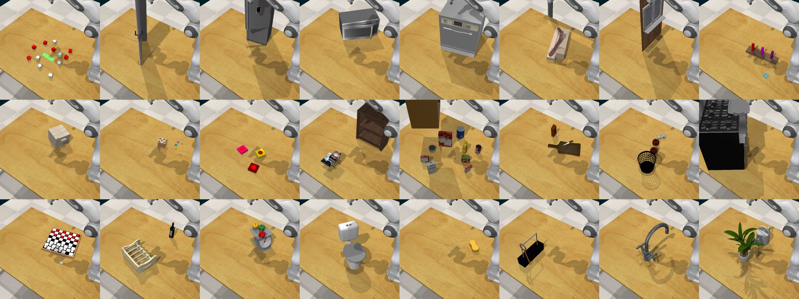

RLBench
官方榜单 ↗
类型 仿真指标 平均成功率行数 22刷新 人工核验官方数据日 2026-10本站拉取 2026-11-14
官方不设排行榜，以下为各论文自报的 18 任务多任务成绩。评测回合数、重复次数、步数上限或检查点选取与标准设定不同的行，已在协议列注明；PerAct、HiveFormer、C2F-ARM-BC 三行数字引自后续论文。
18 任务多任务榜补入 22 条新
| # | 模型 | 平均成功率 | 协议 | 日期 | 状态 |
|---|---|---|---|---|---|
| 1 | BridgeVLA++ 中科院自动化所 + FiveAges + 字节跳动 Seed |
93.7% |
18 任务；100 示范/任务；5 次评测 × 25 回合，±0.6；Place Cups 与 Stack Blocks 步数上限放宽到 35；带时空记忆模块 |
08 | 自报 |
| 2 | ReEnvision 港科大（广州）+ 南京大学 |
88.8% |
18 任务；每任务 50 个评测回合（标准为 25）；以 BridgeVLA 为骨干加动作修复模块；同文复测 BridgeVLA 为 85.7% |
10 | 自报 |
| 3 | BridgeVLA 中科院自动化所 + 字节跳动 Seed |
88.2% |
18 任务；100 示范/任务；5 次评测 × 25 回合，每回合最多 25 步 |
06 | 自报 |
| 4 | GPA-RAM 北大深研院 + 深圳先进院 + 澳门大学 |
87.5% |
18 任务；100 示范/任务；4 次 × 25 个未见场景；在最后 30 个 epoch 的模型中取成绩最高者 |
04 | 自报 |
| 5 | SpatialActor 清华大学 + 原力灵机 + 旷视 + 阶跃星辰 |
87.4% |
18 任务 249 变体；100 示范/任务；每任务 25 个未见回合；±0.8 |
11 | 自报 |
| 6 | SAM2Act University of Washington / NVIDIA / AI2 |
86.8% |
18 任务；100 示范/任务；4 次评测均值，±0.5 |
01 | 自报 |
| 7 | ARP+ Rutgers University |
86.0% |
18 任务；3 次独立运行均值；不使用时间步输入；同文 ARP（层数较少）为 81.2% |
10 | 自报 |
| 8 | 3D-LOTUS Inria / ENS |
83.1% |
RLBench-18Task；18 任务 249 变体，训练与测试同一任务集；±0.8 |
10 | 自报 |
| 9 | RVT-2 NVIDIA |
81.4% |
18 任务；100 示范/任务，25 个未见回合；128×128 四路 RGB-D；同一模型评测 4 次取均值 |
06 | 自报 |
| 10 | 3D Diffuser Actor CMU |
81.3% |
18 任务多视角设定（PerAct 设定）；四路 RGB-D；多随机种子均值 |
02 | 自报 |
| 11 | Cortical Policy 哈工大（深圳） |
81.0% |
18 任务 249 变体；100 示范/任务；单一检查点；同文在相同条件下重训 RVT-2 得 77.5% |
03 | 自报 |
| 12 | Mini-Diffuser KU Leuven / ETH Zurich |
77.6% |
18 任务 249 变体；100 示范/任务；每任务 300 个评测回合、3 个随机种子；单张 RTX 4090 训练约 13 小时 |
05 | 自报 |
| 13 | VIHE 约翰斯·霍普金斯大学 + 百度研究院 |
77% |
18 任务；100 示范/任务；PerAct 同一 25 个测试变体；原表为整数 |
03 | 自报 |
| 14 | SAM-E 清华深研院 + 上海人工智能实验室 + 港科大 |
70.6% |
18 任务 249 变体；5 次评测均值，±0.7 |
05 | 自报 |
| 15 | Σ-agent 港科大（广州） |
68.8% |
18 任务；100 示范/任务；同一 25 回合评测 3 次取均值；10 示范/任务设定为 47.3% |
06 | 自报 |
| 16 | 3D-MVP NVIDIA + 密歇根大学 + NYU |
67.5% |
18 任务；四路 128×128 RGB-D；RVT 架构加 3D 多视角预训练 |
06 | 自报 |
| 17 | Act3D CMU |
65.1% |
原文表 1（CLIP ResNet50 主干）为 65.1，正文写作 65%；18 任务 249 变体，每任务 500 个未见回合；3D Diffuser Actor 论文称其划分与标准设定不同，按标准设定重训为 63.2% |
06 | 自报 |
| 18 | RVT NVIDIA |
62.9% |
18 任务；100 示范/任务；同一 25 个变体评测 5 次取均值 |
06 | 自报 |
| 19 | PerAct University of Washington / NVIDIA |
49.4% |
数字引自 RVT 论文表 1：用 PerAct 发布的最终模型重评 5 次；PerAct 原文只列分任务成绩 |
09 | 自报 |
| 20 | PolarNet Inria / ENS |
46.4% |
18 任务 249 变体；100 示范/任务；每任务 25 回合；按 PerAct 加正面相机 |
09 | 自报 |
| 21 | HiveFormer Inria |
45.3% |
数字引自 PolarNet 论文表 11（PolarNet 作者的复现实现）；100 示范/任务 |
09 | 自报 |
| 22 | C2F-ARM-BC Imperial College London |
20.1% |
数字引自 RVT 论文表 1，源自 PerAct 论文；RVT 指出该数按任务分别挑选最佳模型，会高估 |
06 | 自报 |